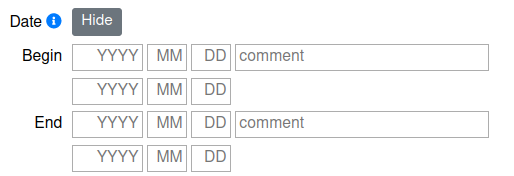

Date¶
Date input fields in forms are initially hidden and can be shown with clicking on Show beside the Date label.
To manage uncertainty in time up to 4 dates can be used: a time span for the beginning and a time span for the ending.
Exact date
For example if you knew the exact birth of an actor you could enter 1356-12-23 in the first row.
Time span
If you are unsure e.g when a Church was destroyed you could use both end dates. Chose a wide enough span where you are sure it had happened, e.g. the fist decade of 1800.
enter in the first end year: 1800
enter in the second end year: 1809
Missing days and months are filled out so that the result will be 1800-01-01 to 1809-12-31.
Input values
Year: -3713 to 9999 but not zero
Month: 1 to 12
Day: 1 to 31
Comment: a text field for additional information for begin or end
Background
Dates will be validated so you can just try if you aren’t sure about a leap year or similar. Most limitations come from the database PostgreSQL which in turn uses the Proleptic Gregorian calendar. So there is no year zero (one year before year 1 is the year 1 BC).